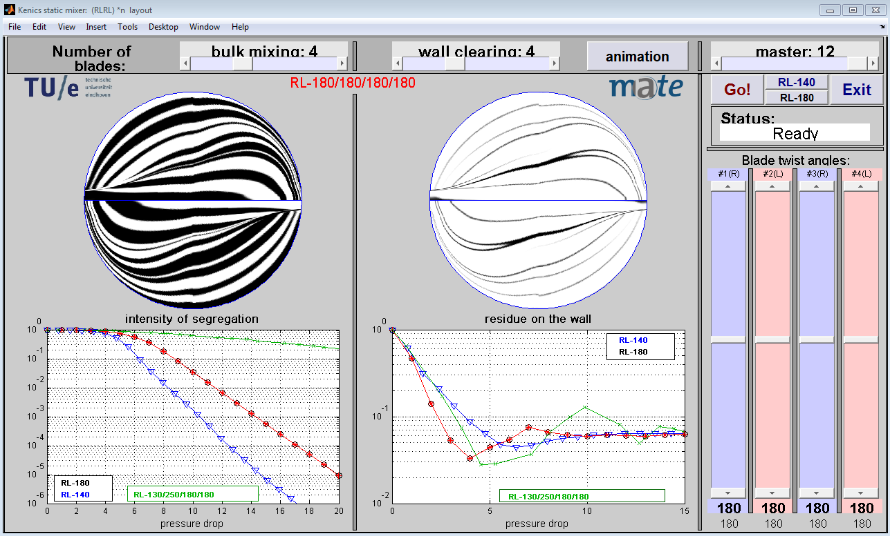

This page is the frontpage of the Fingerpaint project. Here, you can use the application when it is ready. Also, the developer team will post updates on this site about the progress.
The Fingerpaint application is a HTML5 application that enables a user to quickly and easily define the initial distribution of liquids in a mixer. It is in some way an extension of existing programs in which mixing can be simulated. An example is shown below.
Here, updates about the development will be posted.
25 april 2013 The team is setting up a development and testing environment and documenting the wishes of the customer.